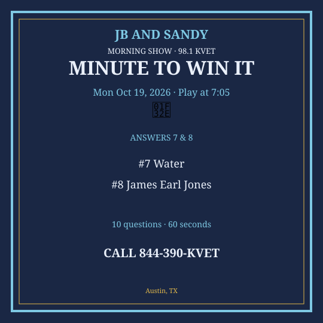

M2W Oct 19-23 2026
New packet. Questions get harder as you go. Graphics are Q7 & Q8 only.
Monday — Mon Oct 19, 2026
Question 1: What do you use to row a boat?
Answer: Oar
Question 2: How many legs does a dog usually have?
Answer: Four
Question 3: Which Austin lake was created by damming the Colorado?
Answer: Lake Travis / Lady Bird — accept either
Question 4: What color is a pumpkin?
Answer: Orange
Question 5: Which sport is the Super Bowl for?
Answer: Football
Question 6: What is the capital of Italy?
Answer: Rome
Question 7: What do plants drink through their roots?
Answer: Water
Question 8: Who is the voice of Darth Vader (original)?
Answer: James Earl Jones
Question 9: What is 1000 − 1?
Answer: 999
Question 10: Which country uses the euro as official currency and is home to the Eiffel Tower?
Answer: France
Social card for Q7 & Q8 — download and post:
{kind=link}

Tuesday — Tue Oct 20, 2026
Question 1: What do you put on a bed to sleep under?
Answer: Blanket / sheets
Question 2: How many nickels in a quarter?
Answer: Five
Question 3: What is the name of Austin’s famous breakfast taco hour?
Answer: Anytime
Question 4: What animal says “moo”?
Answer: Cow
Question 5: Which planet is farthest from the sun in the current eight?
Answer: Neptune
Question 6: What is the sweet substance made by bees?
Answer: Honey
Question 7: What does DIY’s cousin IKEA sell?
Answer: Furniture
Question 8: Who painted American Gothic?
Answer: Grant Wood
Question 9: What is the cube of 3?
Answer: 27
Question 10: Which U.S. document starts “We the People”?
Answer: The Constitution
Social card for Q7 & Q8 — download and post:
{kind=link}
Wednesday — Wed Oct 21, 2026
Question 1: What do you wear on your head in the sun?
Answer: Hat
Question 2: How many days in a week?
Answer: Seven
Question 3: What is the name of UT’s tower on the Forty Acres?
Answer: The Tower / UT Tower
Question 4: What is 6 × 7?
Answer: 42
Question 5: Which continent is Brazil on?
Answer: South America
Question 6: What is the process plants use to make food?
Answer: Photosynthesis
Question 7: What does WWW stand for?
Answer: World Wide Web
Question 8: Who wrote “The Odyssey”?
Answer: Homer
Question 9: What is the freezing point of water in Celsius?
Answer: 0
Question 10: Which sea separates Europe and Africa at Gibraltar?
Answer: Mediterranean
Social card for Q7 & Q8 — download and post:
{kind=link}
Thursday — Thu Oct 22, 2026
Question 1: What do you look in to see your face?
Answer: Mirror
Question 2: How many ounces in a standard cup?
Answer: Eight
Question 3: What is the name of the Austin city limits PBS show?
Answer: Austin City Limits
Question 4: What do you call a frozen dessert on a stick?
Answer: Popsicle
Question 5: Which country is Kyoto in?
Answer: Japan
Question 6: What blood type is the universal donor?
Answer: O negative
Question 7: What does PIN stand for on a bank card?
Answer: Personal Identification Number
Question 8: Who discovered penicillin?
Answer: Alexander Fleming
Question 9: What is 9 squared?
Answer: 81
Question 10: Which ocean did Magellan’s expedition cross after rounding South America?
Answer: Pacific
Social card for Q7 & Q8 — download and post:
{kind=link}
Friday — Fri Oct 23, 2026
Question 1: What do you use to sweep a floor?
Answer: Broom
Question 2: How many colors in a basic rainbow?
Answer: Seven
Question 3: What is the name of the Texas state capital building in Austin?
Answer: The Capitol
Question 4: What is 5 × 12?
Answer: 60
Question 5: Which country is home to the Great Barrier Reef?
Answer: Australia
Question 6: What is the largest internal human organ?
Answer: Liver
Question 7: What does USB-C describe?
Answer: A connector type
Question 8: Who sang “God Bless America” as a standard (Irving Berlin wrote it)?
Answer: Irving Berlin wrote it
Question 9: What year did the U.S. land rovers on Mars named Spirit and Opportunity launch era begin (first landing year)?
Answer: 2004
Question 10: What is the capital of Sweden?
Answer: Stockholm
Social card for Q7 & Q8 — download and post:
{kind=link}